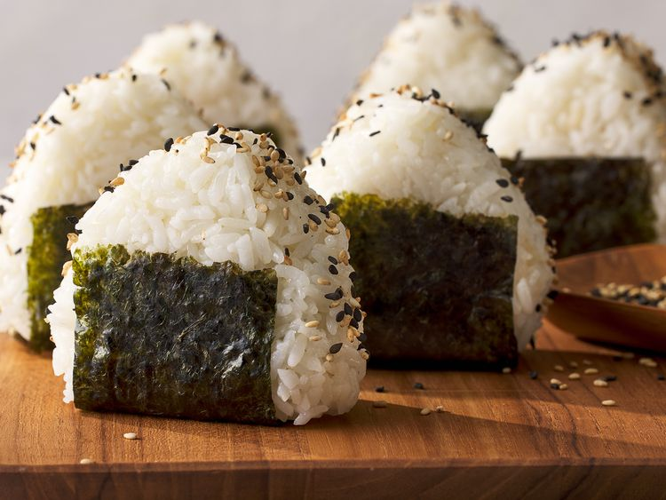

Onigiri

Description
This easy onigiri recipe is also fun to make!
These rice balls are a staple of Japanese lunchboxes (bento).
You can put almost anything in these rice balls; try
substituting grilled salmon,
pickled plums, beef, pork, turkey, or tuna with mayonnaise.
Ingredients
- Rice
- Water
- Salt
- Bonito Shavings
- Nori/Seaweed
- Seasame Seeds
Steps
- Clean and cook rice
- Use water to dampen hands to form rice
- Create dimple and fill in dimple with filling of choice and sprinkle salt
- Assemble and wrap the rice balls in nori
- Complete by sprinkling bonito shavings and seasame seeds
Home